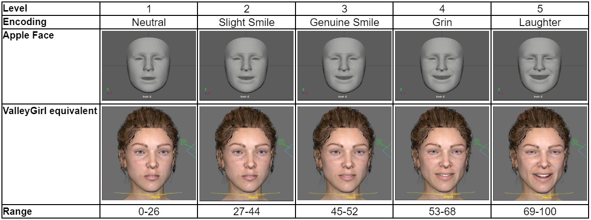
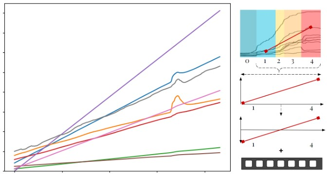
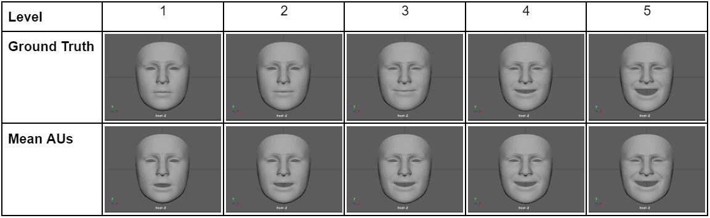

Make it Happier! Discretizing and Amplifying Happiness in Animated Faces
Jessica Bo and Zixin Zhao
CSC2521 Course Project
CSC2521 Course Project

Figure 1: (Top) Apple Face and (Bottom) ValleyGirl saying the same phrase with the original captured (left) neutral face, (middle) amplified happiness using a naive linear method, and (right) amplified happiness using a data-driven method.
Introduction
Modeling human expression within facial animation is a complex task as it involves the interplay between many facial muscles. The Facial Action Coding System (FACS) (Ekman & Friesen, 1978) has become a popular tool for encoding facial movements based on the musculoskeletal system, via action units (AUs). It offers a systematic approach to model emotions on human faces. Despite the advances in automated facial animation, there still needs to be more reliance on human actors and animators to create realistic expressions on animated faces. Prior literature shows six main emotions (happy, sad, angry, disgust, surprise, and fear) (Ekman & Friesen, 1978), and we focused our works on happiness after some pilot testing. Yu et al. (2012) have shown that people can perceive emotional expression at three intensities, where each intensity is equally spaced apart. However, emotions are often expressed nonlinearly, so using equally spaced apart emotions may not capture the different discrete, granular levels of emotion expression, nor the dynamic progression of emotion. Thus, we want to explore how realistic expressions captured from real people can be used to determine different intensities of emotions, which can be applied to artificially control the emotion expression in animated models. . Our project aims to address two main research questions:
- Can we identify the quantifiable levels of expressed happiness and spacing between each level on human faces?
- Can we create realistic animations by artificially amplifying or dampening happiness on different facial models to the desired levels?
Related Works
Systematic Mapping of Human Expressions using FACS
The two most popular emotion description methods are FACS and continuous models using affect dimensions. FACS helps encode facial movement based on facial muscles and can be used to reliably model spontaneous emotions (Sayette et al., 2001). Additionally, prior works have been conducted to determine which action units (AU) are correlated to the expression of the six basic emotions. A summary of their results can be seen in Table 1. Using the AU mappings, Spencer-Smith et al. explored creating a three-dimensional parameterized facial expression model. There have also been works in the automatic identification of facial expressions using FACS, with early models using hidden Markov models (Lien et al., 1998) and more recent ones using SDM and CNN-based models (Li et al., 2022).

Table 1: Action units associated with each of the 6 basic emotions (Parke & Waters, 1996)
Detecting and Quantifying Emotion Expressions
Examining human perception of facial expressions of emotion has been a research topic in psychophysics for some time. Within psychophysics, Marneweck et al. (2013) conducted studies to examine the threshold for distinguishing between different levels of emotions for four basic emotions: anger, disgust, happiness, and sadness. They gathered images of actors making a neutral face and one for the four basic emotions tested at maximum intensity. Then morphed the neutral with the one with maximum emotion intensity at 5% increments, and showed each to participants to determine whether there were differences between the intensified images. They found that participants could only tell when images had 10-15% differences between them. Additionally, there were differences between each emotion, with happiness requiring the least difference between the two images to tell apart and sadness requiring the largest differences.
Amaya et al. (1996) explored applying “emotion transforms” with respect to speed and range of movement to generate emotions on animated faces. They considered emotion a secondary movement that augmented the primary body movement, and computed the difference between the emotional and neutral movements. They used an extracted emotional curve as a mask to transform the phase and amplitudes of neutral movements. Their work focused more on bodily movement. However, we draw inspiration from their methods of extracting an “emotion curve” to apply to a neutral facial animation.
Another work we draw inspiration from and closely relate to our project is one by Yu et al. (2012), which focuses on synthesizing facial expressions without using human actors. Using FACS-certified actors, they built three-dimensional models of the FACS codes using the randomly sampled points from the AU performance data captured and linearly combined them to formulate a base emotion model for each of the six emotions. They found the most important AUs for each emotion through a human perception experiment, which we utilize as a starting point for our AU data extraction. Through mapping of the AUs, they show that the activations of each AU occur at different times and have different rates of growth, thus showing that FACS curves for emotions are nonlinear. Following the AU extraction, they validated their AU selection by generating three equally spaced intensity levels for each emotion and had participants determine the more intense one. Participants achieved 95.4% accuracy.
As we are working with amplification of emotions on human faces, we have to be aware of the level of exaggeration to avoid the uncanny valley. There are also differences in the perception of realistic human faces and less realistic ones. In general, less realistic faces require more exaggerated faces to reach the emotional intensity that a more realistic human face shows (Mäkäräinen et al., 2014). When comparing perceived realism and eeriness of animated faces, shape is the dominant factor for rating realism and expression intensity (Zell et al., 2015). Furthermore, Zell et al. (2014) compared the effect of realism levels in skin texture maps, stylization, shading, lighting, and texture in animated faces. They found that realism is not always preferred and is not a good predictor for animation appeal, eeriness, or attractiveness. One of their experiments found that the models with the highest appeal are closer to reality but still maintain some stylization. There are also different portions of the face that humans tend to use to determine the emotion of animated faces; for instance, for happiness, the most important features in descending order are mouth, eyebrows, and eyes (Zhang et al., 2021). Moreover, when comparing the expression intensity of the animated faces, the more intense happy faces were often perceived as less happy overall (Zhang et al., 2021).
Amaya et al. (1996) explored applying “emotion transforms” with respect to speed and range of movement to generate emotions on animated faces. They considered emotion a secondary movement that augmented the primary body movement, and computed the difference between the emotional and neutral movements. They used an extracted emotional curve as a mask to transform the phase and amplitudes of neutral movements. Their work focused more on bodily movement. However, we draw inspiration from their methods of extracting an “emotion curve” to apply to a neutral facial animation.
Another work we draw inspiration from and closely relate to our project is one by Yu et al. (2012), which focuses on synthesizing facial expressions without using human actors. Using FACS-certified actors, they built three-dimensional models of the FACS codes using the randomly sampled points from the AU performance data captured and linearly combined them to formulate a base emotion model for each of the six emotions. They found the most important AUs for each emotion through a human perception experiment, which we utilize as a starting point for our AU data extraction. Through mapping of the AUs, they show that the activations of each AU occur at different times and have different rates of growth, thus showing that FACS curves for emotions are nonlinear. Following the AU extraction, they validated their AU selection by generating three equally spaced intensity levels for each emotion and had participants determine the more intense one. Participants achieved 95.4% accuracy.
As we are working with amplification of emotions on human faces, we have to be aware of the level of exaggeration to avoid the uncanny valley. There are also differences in the perception of realistic human faces and less realistic ones. In general, less realistic faces require more exaggerated faces to reach the emotional intensity that a more realistic human face shows (Mäkäräinen et al., 2014). When comparing perceived realism and eeriness of animated faces, shape is the dominant factor for rating realism and expression intensity (Zell et al., 2015). Furthermore, Zell et al. (2014) compared the effect of realism levels in skin texture maps, stylization, shading, lighting, and texture in animated faces. They found that realism is not always preferred and is not a good predictor for animation appeal, eeriness, or attractiveness. One of their experiments found that the models with the highest appeal are closer to reality but still maintain some stylization. There are also different portions of the face that humans tend to use to determine the emotion of animated faces; for instance, for happiness, the most important features in descending order are mouth, eyebrows, and eyes (Zhang et al., 2021). Moreover, when comparing the expression intensity of the animated faces, the more intense happy faces were often perceived as less happy overall (Zhang et al., 2021).
Pilot Study: Facial Landmark Extraction and AU Identification
For this project, we are using existing facial mapping technology (Apple's ARKit), as facial landmark detection is a nontrivial task. Prior works (Sayette et al., 2001; Spencer-Smith et al., 2001; Yu et al., 2013) have performed perceptual studies to determine which AU activation induces the perception of each of the six basic emotions. While the literature identifies relevant AUs to target, they do not specify the value for activation or define the path of movement of each AUs. There are some FACS curved shown in Yu et al. (2013), however, from our review of literature, there does not seem to be a standard curve for “happiness”. Additionally, there is no one-to-one mapping of blendshapes available from ARKit outputs and FACS. Therefore as an initial prototyping step, we attempt to create mapping of blendshapes from ARKit to FACS using Chris Landreth's lecture slides (Landreth, 2023), and to downstream animation models using open-source resources and manual mapping to serve as a foundation to subsequent analysis and emotion amplification. We perform this for Anger and Happiness, which are two of the strongest expressions, and the results are summarized in Table 2.


Table 2: Action units with activation percentage at different intensities of happiness and their corresponding JALI and Apple Face blendshape names.
Similarly, Figure 2 shows ValleyGirl and Apple Face displaying different levels of happiness.
Figure 2: Happiness at differen levels of happiness
Next we investigated if real world data reflects our literature-derived prototypes. Therefore, we had one of our researchers (Zixin) perform a gradual smiling motion and captured it using ARKit. Anger was not performed due to the difficulty of the emotion. Using the generated FACS curves, we found that there were key points related to the different quantifiable levels of happiness and each level had varying durations. Each section was identified holistically using our own judgment aided by Chris Landreth's slides (Landreth, 2023), thus it may not be the most accurate. We found that in Zixin's smile video, there are five main stages of happiness as shown in Figure 3.
Neutral - Slight Smile - Smile - Genuine Smile - Laughter
Figure 3: The stages of smiling and the associated FACS curves, the stages, or levels, discretize include Neutral, Slight Smile, Smile, Genuine Smile, and Laughter.
We plotted all the main identified AUs on the left side, as the right side is assumed to be mirrored, that are related to expressions of happiness from previous works. We observed that there are nonlinear activations of different AUs, with MouthSmileLeft being activated first and having almost a stepladder shape. The shape of the curves presented here shows that the duration of each level of happiness is not evenly spaced, therefore varying intensity using equally spaced intervals is likely not going to be able to capture the different expressions realistically.
User Study: Recording Emotion Activations and Speech
To collect more data on expressing emotions, we contacted drama clubs and theatre groups across University of Toronto campus. We hoped to gain insight into the various ways experienced actors express emotions consciously through acting. However, due to low participant turnout, we conducted a separate data collection study using available participants. We gathered a total of eight participants (N=8) for our recording study. Our data collection study consisted of three main parts:
- Semi-structured interview about different ways emotions can be expressed
- Performing neutral to full intensity happy and neutral to full intensity angry faces
- Reciting two sentences in two different tones (neutral/happy and neutral/angry)
- "I had such a good day today."
- "I almost got run over by a car today."
Interview Results
We conducted our study in various settings, however the same questions were asked to each participant and the order was unchanged. From the interviews we found that people generally perceived anger having three separate levels: annoyed, angry, and yelling. Similar facial muscles were engaged, but with each increased level, the activation of the muscles would increase. For happiness, people found that there were four different expressions people make at varying levels of happiness: small smile, cheeks puffed smile, eyes crinkles smile, laughing with teeth. In addition to facial expressions, participants would bring up nuances of expressing emotions that cannot be captured by face alone, such as a conflicting body language and face expressions as well as body movements as a facet of expressing emotions like anger.
Recording Results
We show a sample of what the recording results looked like. Figure 4 shows P1's happiness expression video (displayed with permission) and the ARKit's AUs animated on the Apple Face.

Figure 4: Sample recording from our recording study of a participant going from a neutral face to full smile
Emotion Level Discretization
Using the previously identified AUs for happiness from the Pilot study, we extracted each participant's recorded blendshape weights to determine whether we could obtain a generalized graph of a happiness FACS curve. The graphs in Figure 5 below shows the FACS curve of each identified AU for the participants' happiness.


Figure 5: un-aligned FACS curves of the happy AUs of all recording study participants.
After obtaining these curves, we resampled them to the same length and start activation time, so that we can approximate a mean curve for all identified AUs as shown in Figure 6.
Figure 6: aligned FACS curves of the happy AUs of all recording study participants with the mean curves for each AU shown in orange.
There are some variations in how each participant's AUs were activated. However, in general, there is a similar trend for the AUs. The AUs with the most significant differences between participants are EyeSquint, MouthDimple, and NoseSneer. There is one clear outlier for the MouthDimple AU (P6), which may be part of a personal quirk. Since we did not know the importance of each AU for the expression of happiness, we used PCA on all the features to determine the features that correlate to expressing happiness. After running PCA, we found that reducing the components to two dimensions captures 99.7% of the data feature variances in our data, with component 1 capturing 97.8% of the feature variances and component 2 capturing 1.9%. Additionally, through feature analysis of each component, details shown in Table 3 focusing on the values for the first component since it captures the features at a higher percentage, we can see that the most important features in descending order are MouthSmile, CheekSquint, and MouthUpperUp. Therefore, the variations in EyeSquint, MouthDimple, and NoseSneer were less important when determining the shape of the general happiness FACS curves.
Table 3: Two main component obtained from PCA and their correlation to the main happiness AUs.
After combining all the mean AUs, we get the graph in Figure 7 shown below.
Figure 7: FACS curves of the mean of happiness AUs obtained from our recording study.
Using the calculated mean AU values, we group them into different intensity levels. After visually identifying that there could be between 4 and 6 discrete levels, we used k-means clustering with k=4,5,6 and mapped it to the mean curves to see the cut-off for each level. From the graphs below, we found that k=5 captured the different segments of the curves and grouped them into levels that best balanced granularity and recognizability. When k=4, some AUs are activated in the neutral range, while k=6 discretizes the levels into too many levels, making it hard to distinguish one from another. One thing to note is that all bins similarly grouped neutral (dark blue) and high-intensity (red) sections of the curves; the main differences were in separating the middle expressions. In Figure 8, the blue sections represent the start of a smile, the yellow-orange section represents a smile, and the red corresponds to an open mouth laughing.
Figure 8: Mean curves with different colouring for clusters detected through k-means clustering, blue is related to neutral and sligh smiles, yellow/orange correlates to visible smiling, and red signifies a high intensity happy face.
To answer our first research question, Table 4 containing the separated levels and approximate ranges determined from k-means clustering and what the mean curve projected on Apple Face and ValleyGirl looks like at each level. Through the recording study, we determined five distinguishable levels of happiness ranging from neutral to laughter and experimentally estimated the average percentage duration of each level. Additionally, we can confirm that the expression of happiness is non-linear, and the duration between each level is not of equal duration.

Table 4: Levels of happiness with associated encoding names and range obtained through k-means clustering.
Implementation: Amplifying Emotions Methods
Naive Static Method
During the recording study, we recorded participants saying the same speech in neutral and happy tones. By comparing individual AU curves between the two intensities, we saw that the overall trendline of most AUs was similar but raised. Therefore, we initially proposed a naive amplification procedure which adds the difference between the AU activation between the happy speech and neutral speech, as shown by the following equation.
 From the graphs shown below in Figure 9, we added the mean of the Happy (blue) to Neutral (orange) to obtain the adjusted (green) curve. Overall, the amplification matches some of the AUs (e.g. JawOpen and MouthSmile). However, it underperforms for AUs where neutral has no activation or has a very different shape from its happy counterpart (e.g. BrowDown).
From the graphs shown below in Figure 9, we added the mean of the Happy (blue) to Neutral (orange) to obtain the adjusted (green) curve. Overall, the amplification matches some of the AUs (e.g. JawOpen and MouthSmile). However, it underperforms for AUs where neutral has no activation or has a very different shape from its happy counterpart (e.g. BrowDown).

Figure 9: AUs for happiness showing a naive static method (green) which raises the values of a neutral speaking recording (orange) up to match the true happy recorded AU shape (blue).
Naive Linear Method
While the naive static method works if we want to amplify a neutral video fully to some consistent level of happiness, it does not capture any dynamic variations in how expressions change moving between different intensities. We propose an upgraded method that enables transitioning between emotion levels. The naive linear method takes inspiration from Amaya et al. (1996), where we apply a mask of AU curves, like the one seen in the image below, to an input user recorded video to artificially simulate a gradual progression of happiness. This method involves extracting the desired start and end intensity levels from the Mean AU curves, then linearly interpolating the points in between to match the length of the original video.
To compensate for videos with an existing baseline level of happiness, we normalize the mask by subtracting the AU activations of the existing level to prevent over-amplification or over-dampening. The baseline level is determined by projecting the average level of activation of the Smile AU (the most deterministic AU according to PCA) to find the closest activation in the Mean AU curves, and categorizing the level. The full process is summarized in Figure 10 below.
To compensate for videos with an existing baseline level of happiness, we normalize the mask by subtracting the AU activations of the existing level to prevent over-amplification or over-dampening. The baseline level is determined by projecting the average level of activation of the Smile AU (the most deterministic AU according to PCA) to find the closest activation in the Mean AU curves, and categorizing the level. The full process is summarized in Figure 10 below.

Figure 10: Example process utilized in our naive linear method to adjust a video to start at a level 2 (slight smile) to level 5 (laughing).
Data-Driven Mean Curve Method
Similar to the naive linear method, the data-driven method applies a mask to the AUs of a user recorded video; but instead of linear interpolation, we use the mean AU curves obtained from our recording study. The amplification process is similar, we sample the points between the desired start and end levels according to the length of the video and subtract the baseline level of emotion. For dampening, we temporally reverse the curve so that the activations are performed in the reverse order. The process is shown in the image below
To provide animators with more control and flexibility, we allow amplification and dampening to be performed on distinct segments within the video, allowing for a mixture of increase and decrease in happiness intensities according to the user's wishes. This is specified through an input control dictionary mapping the progression of the input video with the desired intensity level. For example, a control dictionary of {0:1, 50: 4, 100: 1} means that at between 0-50% of the video, the expression progresses from level 1 to 4, then back down to 1 through the last half of the video 50%-100%. There is no limit of how many control segments that can be implemented.
A example of the process is shown in Figure 11 below.


Figure 11: Example process utilized in our data driven linear method to adjust a video to start at a level 2 (slight smile) to level 5 (laughing).
To answer research question 2 on the amplification pipeline, we summarize our approach as follows:
- Record video using ARKit and download the blendshape CSV.
- Manually determine the desired amplification controls (timing and corresponding level of emotion).
- For each segment specified in the controls, transform the blendshapes using our data-driven Mean AU and process it appropriately (resample, reverse, and subtract baseline).
- Upload the amplified blendshapes to the desired downstream animation model (Apple Face or ValleyGirl) using our manual mapping system.
Figure 12: Amplification of happiness using naive linear and data driven methods on a neutral recording.
Figure 13: FACS curves of the AUs amplified using (middle) naive linear and (right) data driven methods.
Pure Dampening
We show similar results for dampening, this time from level 5 to 1. Note that our Mean AU curves are reversed this time and the baseline level of happiness (around 4) is subtracted to avoid over exaggerating happiness at the start.
See Figure 14 for the animation of dampening and Figure 15 for the correlated AU curves.
Figure 14: Dampening of happiness using naive linear and data driven methods on a smile recording.
Figure 15: FACS curves of the AUs dampened using (middle) naive linear and (right) data driven methods.
Mixed Controls
We demo mixed controls by simulating a realistic sentence that requires a change in emotion. The sentence that was said was:
“When I left my house this morning I saw a cute cat walking across the street
and wasn't paying attention so bumped into somebody who spilled coffee on me.
But that person turned out to be a good friend that I haven't seen in a while.”
This phrase contains different segments which contain different levels of happiness,
we amplified the first segment in yellow to around a level of 3,
then dampened the face for the second segment shown in blue,
and then amplified it to a level of 5 at the end for the last part highlighted in yellow.
The FACS graphs in Figure 16 and rendered results are shown in the video below.
Video 2: Apple Face and ValleyGirl animated to display amplification and dampening of emotions based on sentiment of the sentence uttered.
Figure 16: FACS curves of the AUs adjusted using (middle) naive linear and (right) data driven methods.
Perceptual Study: Detect Emotion Intensities and Amplification Preferences
Our goal for the perceptual study is two-fold: 1) we wanted to validate our initial happiness level discretization, and b) compare the naive linear method with our data-driven approach. Although we used different quantitative analysis techniques to determine the different happiness levels, our results were not tested on human participants who were not trained in identifying FACS and had knowledge of facial animation.
Study 1
The first part of our perceptual study involved a forced two-choice test for distinguishing differences between different levels of happiness expressed on animated faces. We showed our participants every combination of images with two faces, each exhibiting a different level of happiness, and had them select the one they perceived to be happier. We compared faces created with our Mean AU curve with a "ground truth" created from a single human actor's video. The faces used in our experiment are shown in Table 5 below; due to the differences in how the faces are animated in the Mean AU versus the ground truth, we did not have participants compare the mean and ground directly. Due to Valleygirl's AU mapping being unreliable at this stage of the experiment (e.g., full happiness looked like grimacing), we went forth with only the Apple Face. To prevent order and learning effects, we randomized the order of all the faces and position order within each question.

Table 5: Static images of each discrete level of happiness animated using an actor capture (ground truth) and mean AU curves (mean AUs).
Study 2
In the second part of our study we examined the perceived realism and preference of the two amplification methods, linear and data driven. We showed participants two types of animations for amplification and dampening conditions:


- Still faces amplified/dampened to maximum/minimum happiness
- Speaking faces amplified/dampened to maximum/minimum happiness
Figure 17: Face animation (left) amplified from neutral to laughing and (right) dampened from laughing to neutral using our data-driven mean curves.
Results
Differentiating Emotion Levels
Our results for differentiating discrete levels of emotions were similar to the results obtained by Yu et al. (2012); our participants' accuracy was 96.8% (697 correct out of 720). Some of the errors made by participants may have been clicking errors; for example, one participant chose level 1 over 5 to express higher happiness levels. However, for the other entries that were not due to human error, we found that the most frequently wrong levels were different for the faces generated by the mean curve and those generated by the ground truth. We found that errors associated with mean curve generated images (Total Count=7) mainly involve level 3, which we encode as a “genuine smile.” Participants confused level 3 with level 2 and level 5. Level 2 is likely due to the similarity in activated AUs; however, with level 5, it may be due to a difference in perception of what happiness looks like. Participants may perceive an exaggerated laughing face as more sinister and angry than a gentler smile. For the ground truth-based errors (Total Count=9), the errors are associated with level 4. Unlike mean curves, the errors seem likely due to the closeness of the two levels in intensity levels. The errors also suggest that participants do not always perceive " open mouth " as more happy. Overall, there is no significant difference between the perception of different quantized levels between mean and ground truth. Therefore, this suggests that our mean curves perform well enough as an equivalent to the ground truth in the context of modelling levels of happiness. Table 6 below summarizes the errors and provides correlated images for the emotion levels.
Table 6: Errors made by participants during study 1 where they were asked to determine the happier looking face.
Comparison of Amplification Methods
We compared different amplification methods to evaluate the best method for amplifying happiness in videos and whether introducing non-linearity is preferred. From the second part of our perception study, we found that the mean preference rate is the same for both methods. The distribution of the preference rate can be seen in Figure 18 below.
The open-ended responses gave us insight into what participants felt were the most essential features. After performing thematic coding of the responses, we extracted four main points: rate of change (11/36), smoothness (10/36), coordination of eyes and mouth (8/36), and over exaggeration (6/36). We found that people look for fluid movements with fewer moving features, explicitly looking for the gradual speed of emotions appearing on the face. When watching the eyes and the mouth, they paid attention to the eyes matching the mouth movement and coordination in the facial muscles. They noted that animations that provided complete facial movements where all muscles were engaged simultaneously were preferred. Additionally, the rate of change in the expression has to be more constant. The last feature participants often mentioned was picking animations that avoided over-exaggeration. They felt that if the movement were too big, it would feel unnatural. In addition to these results, 11/36 people also indicated they either perceived very little differences or could not articulate what they were looking for, e.g. going by instinct instead.
These results explain why the naive linear amplification was often chosen. Linear amplification provides the gradual and smooth transition that many participants who are untrained in animation feel is the crucial aspect of replicating realism. Additionally, although the synchronized rate of change does not reflect the nonlinearity present in actual human expressions, people tend to perceive emotions as linear stages where the progression between one level of happiness is linearly correlated with the next. Moreover, our data-driven method generally reaches full peaks faster than the linear method, as some AUs have steep slopes. This may be perceived as “choppiness” and “over-exaggeration” by some participants.
Figure 18: Participant preference as percentages aggregated and seperated to compare their opinions on the data-driven method vs linear method.
As seen from the plot, most participants chose the data-driven method around 40% to 50% of the time and the linear method 50% to 60%. More people chose the data-driven option more frequently, at a probability of >80%, compared to linear, which has its distribution assembled at one point. This could suggest that people who prefer the non-linearity in their animation will keep seeking it out in the animated faces.
The open-ended responses gave us insight into what participants felt were the most essential features. After performing thematic coding of the responses, we extracted four main points: rate of change (11/36), smoothness (10/36), coordination of eyes and mouth (8/36), and over exaggeration (6/36). We found that people look for fluid movements with fewer moving features, explicitly looking for the gradual speed of emotions appearing on the face. When watching the eyes and the mouth, they paid attention to the eyes matching the mouth movement and coordination in the facial muscles. They noted that animations that provided complete facial movements where all muscles were engaged simultaneously were preferred. Additionally, the rate of change in the expression has to be more constant. The last feature participants often mentioned was picking animations that avoided over-exaggeration. They felt that if the movement were too big, it would feel unnatural. In addition to these results, 11/36 people also indicated they either perceived very little differences or could not articulate what they were looking for, e.g. going by instinct instead.
These results explain why the naive linear amplification was often chosen. Linear amplification provides the gradual and smooth transition that many participants who are untrained in animation feel is the crucial aspect of replicating realism. Additionally, although the synchronized rate of change does not reflect the nonlinearity present in actual human expressions, people tend to perceive emotions as linear stages where the progression between one level of happiness is linearly correlated with the next. Moreover, our data-driven method generally reaches full peaks faster than the linear method, as some AUs have steep slopes. This may be perceived as “choppiness” and “over-exaggeration” by some participants.
Discussion
Through quantitative analysis of recordings of human expressions of happiness, we were able to identify five discrete levels of happiness and show that the expression of happiness is nonlinear in nature. The different levels of happiness correlate to neutral, slight smile, genuine smile, grin, and laughter. Additionally, we showed that each level of happiness has a different duration when a face moves from a neutral expression to complete laughter. Moreover, through perceptual tests, we confirmed that people recognize each level as distinct, even in less realistic human faces. In future work, we would increase the number of levels to obtain a more precise discretization of happiness levels.
Our project also showed that despite our prior hypothesis that people prefer more realistic nonlinear displays of emotions, people are not as sensitive to realistic facial movements for animated faces. The two proposed happiness amplification methods, naive linear and data-driven, were equally preferred by participants in our perceptual study. This finding suggests that linear amplification methods may be sufficient if data for mean curves are not readily available or is inefficient to sample. However, this result could also be due to some limitations of our animated faces since we used less realistic faces like Apple Face. We will discuss limitations that resulted in our choice of using Apple Face.
Our project also showed that despite our prior hypothesis that people prefer more realistic nonlinear displays of emotions, people are not as sensitive to realistic facial movements for animated faces. The two proposed happiness amplification methods, naive linear and data-driven, were equally preferred by participants in our perceptual study. This finding suggests that linear amplification methods may be sufficient if data for mean curves are not readily available or is inefficient to sample. However, this result could also be due to some limitations of our animated faces since we used less realistic faces like Apple Face. We will discuss limitations that resulted in our choice of using Apple Face.
Animation Transfer Limitations
There were limitations due to the lack of one-to-one mapping of Apple Face and ValleyGirl blendshapes, making it challenging to transfer the emotions recorded using ARKit onto ValleyGirl. The differences in the neutral values needed to be manually hardcoded, which was iterated through many revisions to determine the best possible mapping. Below is a video explaining the problems we encountered during the initial testing of anger expressions due to the problems that arose with unnatural-looking angry expressions during the participant study. We decided not to use the data collected for anger due to this, and also general difficulties for untrained actors to strongly express anger. Instead our project would focus on expressions of happiness. Below is a video showing a problem with transfering blendshapes weights from the ARKit aligned Apple Face to ValleyGirl.


Video 1: Sample recording from our recording study of a participant going from a neutral face to full smile
Additionally, we encountered some problems with head tracking in ARKit and capturing FACS curves when people were laughing. As laughing often involves movements of the head and body, the captured curves look chaotic, and the mapped expressions do not mirror the expression of the human actor perfectly. For example, Figure 19's top graph shows a participant's correlated FACS curve showing the activated AUs when they are laughing. Then, the bottom of Figure 19 show the captured video and modelled facial expressions obtained through ARKit.
Figure 19: A participant's (top) FACS AU curves recorded during a video with laughing, with (bottom) the corresponding video and animation mapping results.
The reason for our usage of Apple Face is one part due to study continuity from study 1 in the perceptual study to study 2, and the other part is due to the subpar animation of the more realistic ValleyGirl model. We could not obtain a good mapping of the face by the time of the perceptual study, and from some pilot testing, we found that people perceived the animated ValleyGirl smiling images as more eerie and surprised. To avoid people being distracted by the uncanny valley of the animated ValleyGirl, we chose to use Apple Face, which is animated and more faithful to the ARKit recordings. One solution we found, slightly too late for the perceptual study, is to reduce the number of transferred blend shape values. We found that including all the mouth movements led to exaggerated motions. Some of the blendshapes that were excluded include:
- JawRight and JawLeft
- MouthRollUpper and MouthRollLower
- BrowOuterUpRight and BrowOutperUpLeft
- MouthFunnel
- MouthFrownRight and MouthFrownLeft
Conclusion
We developed a customized emotion control for animation models that preserves speech and eye movements. To answer our second research question, we demonstrate proof-of-concept with two animation models (realistic and artificial) with the 5 levels of happiness. Finally, we conducted perceptual testing that a) confirms people can recognize levels of happiness in animation models, and b) uncovers that people are not sensitive to realistic expression dynamics.
The next step of our study is to validate the tool with animators, once a functional UI of amplification controls can be implemented in Maya. Through participatory design sessions and UI testing, we can work with animators to improve the utility of emotion controls. Due to the time constraint of this project, we could only explore the levels of happiness. However, future work could build off this to explore the different levels of anger, surprise, fear, disgust, and sadness. Moreover, since our project focuses on the amplification of emotion, matching mouth movement to the words is out of scope. However, future work can explore the synchronization of mouth movements in a more realistic manner. Overall, our project used holistic and empirical methods to determine the different levels of happiness expressed by human faces.
The next step of our study is to validate the tool with animators, once a functional UI of amplification controls can be implemented in Maya. Through participatory design sessions and UI testing, we can work with animators to improve the utility of emotion controls. Due to the time constraint of this project, we could only explore the levels of happiness. However, future work could build off this to explore the different levels of anger, surprise, fear, disgust, and sadness. Moreover, since our project focuses on the amplification of emotion, matching mouth movement to the words is out of scope. However, future work can explore the synchronization of mouth movements in a more realistic manner. Overall, our project used holistic and empirical methods to determine the different levels of happiness expressed by human faces.
Reference
- Amaya, K., Bruderlin, A. and Calvert, T. (1996) Emotion from motion. Graphics interface. Vol. 96. 222-229.
- Edwards, P., Landreth, C., Fiume, E. and Singh, K. (2016). Jali: an animator-centric viseme model for expressive lip synchronization. ACM Transactions on graphics (TOG), 35(4), pp.1-11.
- Ekman, P., & Friesen, W. V. (1978). Facial Action Coding System (FACS) [Database record]. APA PsycTests. DOI: 10.1037/t27734-000
- Landreth, C. (2023). Making Faces. GDC Animation Summit. Presentation.
- Li, S. and Deng, W. (2020). Deep facial expression recognition: A survey. IEEE transactions on affective computing, 13(3), 1195-1215.
- Lien, J. J., Kanade, T., Cohn, J. F. and Li, C. (1998) Automated facial expression recognition based on FACS action units. Proceedings Third IEEE International Conference on Automatic Face and Gesture Recognition, Nara, Japan, 390-395.
- Mäkäräinen, M., Kätsyri, J. and Takala, T. (2014). Exaggerating facial expressions: A way to intensify emotion or a way to the uncanny valley?. Cognitive Computation, 6, 708-721.
- Marneweck, M., Loftus, A. and Hammond, G. (2013). Psychophysical measures of sensitivity to facial expression of emotion. Frontiers in Psychology, 4, 63.
- Parke, F.I. and Waters, K. (2008). Computer facial animation. CRC press.
- Sayette, M. A., Cohn, J. F., Wertz, J. M., Perrott, M. A., & Parrott, D. J. (2001). A psychometric evaluation of the facial action coding system for assessing spontaneous expression. Journal of nonverbal behavior, 25, 167-185.
- Spencer-Smith, J., Wild, H., Innes-Ker, Å. H., Townsend, J., Duffy, C., Edwards, C., & Pair, J. W. (2001). Making faces: Creating three-dimensional parameterized models of facial expression. Behavior Research Methods, Instruments, & Computers, 33, 115-123.
- Yu, H., Garrod, O. G., & Schyns, P. G. (2012). Perception-driven facial expression synthesis. Computers & Graphics, 36(3), 152-162.
- Zell, E., Aliaga, C., Jarabo, A., Zibrek, K., Gutierrez, D., McDonnell, R. and Botsch, M. (2015). To stylize or not to stylize? The effect of shape and material stylization on the perception of computer-generated faces. ACM Transactions on Graphics (TOG), 34(6), pp.1-12.
- Zhang, S., Liu, X., Yang, X., Shu, Y., Liu, N., Zhang, D. and Liu, Y.J. (2021). The influence of key facial features on recognition of emotion in cartoon faces. Frontiers in psychology, 12, p.687974.